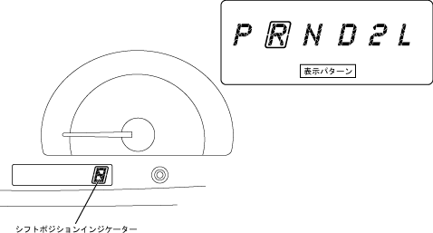

| Shift position indicator lamp |
| ● |
The shift position indicator lamp is placed in the combination meter.The shift position indicator is located in the LCD (liquid crystal display), and by changing the display segment, each shift position is displayed in the same position.
|
|  |
 Shift position indicator lamp operation Shift position indicator lamp operation
|